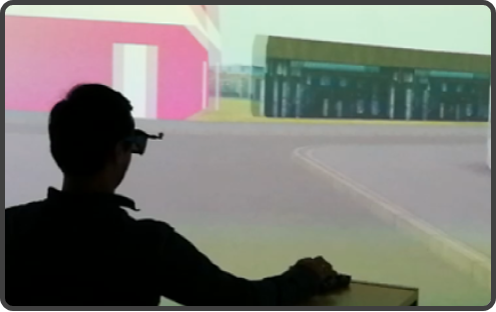
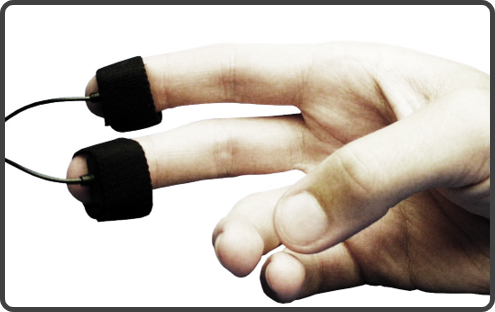

Methods
“Understanding people will help you build better interactive technologies and systems” (Ritter, Baxter & Churchill, 2014). This quote illustrates the basic components of user experience (UX) research. First, the interaction of a user with any kind of system, may it be digital or not. Second, understanding all the aspects of how people use a product: how they feel about it while they’re using it, how well they understand it, to which extant it serves the user’s purposes, and if it provides benefits in the entire context in which they are using it (Alben, 1996).
Knowledge of Psychology, Sociology, and the Affective Sciences together with a set of empirical tools provide a starting point for understanding and measuring the multifacetted nature of human experience. Here, I want to give a brief overview on some of the methods that I have been using to get insights into peoples’ experience and into the drivers of their decision making.
Ritter, F. E., Baxter, G. D., & Churchill, E. F. (2014). Foundations for designing user-centered systems. Springer-Verlag London, DOI, 10, 978-1.
Exploring attitudes and observing the user
Qualitative methods are key to answer the WHY of a user experience and push the development of a good design. In early stages of the design process researchers typically face the challenge of defining product features or formulating the right UX questions to begin with. In the Design Thinking approach the exploring phase is covered in the understand and observe part of the process and typically involves to empathise with the user (phase 1) and based on a well defined persona, to identify user needs (phase 2). The key outcome of both phases is to identify and frame a design problem in a user-centered perspective. To accomplish this goal, qualitative methods are suited, because they provide insights into the user’s attitudes and thoughts. For example, a focus group, or a usability test coupled with think-aloud technique may provide researchers with real insights about why user’s like or dislike something.
Quantifying behavior
In case researchers want to compare the design of different prototypes, or we want to understand how a design performs as compared to some other baseline, we need to quantify behavior.
through statistical analyses and mathematical modeling.

Virtual Reality as Research Tool
Virtual Reality (VR) involves the use of computer generated simulations that provide users the opportunity to interact with objects, products, or large-scale environments that appear and feel similar to the real world. As such, VR studies can provide insights into the look and feel of products that are designed as digital prototypes. The advantage of such VR models is that they are often less expansive and more time efficient to create than physical models. Even though some senses are not provided with information in VR, behavioral studies in virtual environments have shown fundamentally similar results when compared to studies that were conducted in real environments. In my Masters and PhD, I used VR to study the visual and geographical design of cities and architecture and how these aspects affect a user’s ability to orient in and learn these spaces.

Understanding Emotions
Providing good UX goes beyond good usability and self-reported product needs. Crucially, a positive experience involves emotions.
Emotions are the core driver of human behavior and, in turn, emotions are also strongly affected by the things we are exposed to. Designing an engaging product always touches a user’s emotions. There is a ton of instruments out there that allow people to report their emotions (e.g., Self Assessment Manikin, Dundee Stress State Questionnaire, etc.). However, emotions are intimate and often hard to describe for users and that’s why data are typically very noisy. However, instead of asking people what they feel, it is possible to get insights on emotions through physiological techniques. For example, electro dermal activity (EDA) can measure one’s level of excitement or arousal based on differences in the sweat production of the skin of the hand. While the assessment of EDA is getting increasingly popular and affordable, it involves a lot of expertise to collect and interpret the signal. During my PhD I used this method toghether with other sensors (facial electro myography, fEMG) to assess how different tasks affect user’s state of emotion. In my research I could show that multi-tasking has a strong effect on users’ physiological arousal levels and also they reported higher levels of negative emotions (distress) during multi-tasking.
credits
blue eye photo by Daniil Kuželev measure photo by Anne Nygård